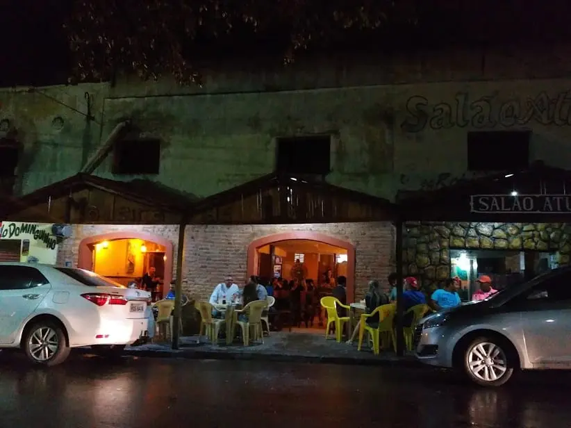
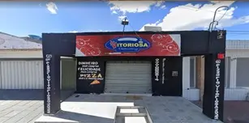

Menu ligeiro
Atrações arretadas
Onde encher o bucho

Madeira de Lei
R. Maria Cottas, 84 - Arcoverde, PE
Qua à Dom • 19h
@barmadeiradelei

Pizzaria Vitoriosa
Rua Padre Roma, 280 - Arcoverde, PE
Seg à Dom • 18h